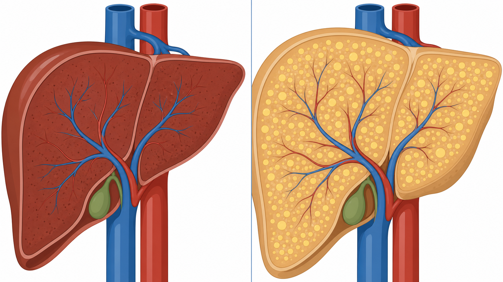
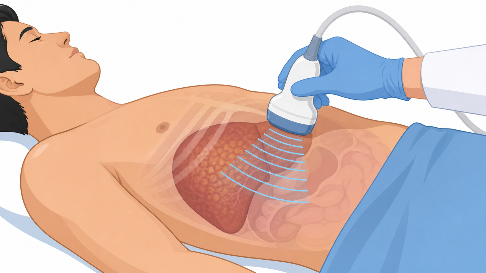
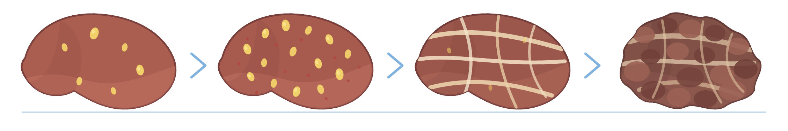
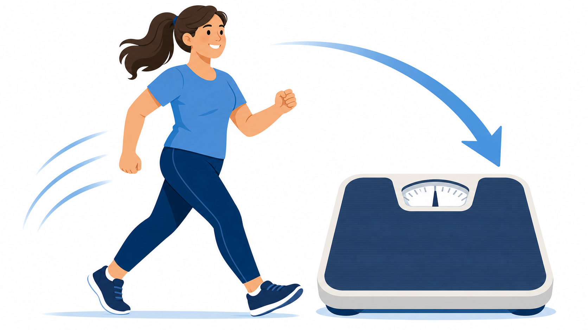
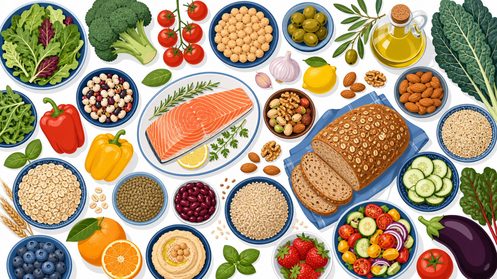

지방간, 흔하지만 가볍지 않은 병
대사이상 지방간질환(MASLD) 바로 알기
간에 지방이 쌓이는 매우 흔한 병 — 대부분 증상이 없어 검진에서 우연히 발견됩니다. 핵심 치료는 체중 7~10% 감량입니다
지방간은 얼마나 흔할까요
성인 3명 중 1명에서 발견되는, 우리나라에서 가장 흔한 만성 간질환입니다
MASLD란 무엇인가요
간에 지방이 쌓이고(지방 축적), 대사 위험인자가 함께 있을 때 붙는 새 이름입니다
간세포에 지방이 축적되고, 과체중·당뇨 같은 대사 위험인자가 함께 있는 상태입니다.
과거에는 비알코올 지방간(NAFLD)이라 불렀지만, 술이 아니라 대사 문제가 원인이라는 점을 분명히 하려고 2023년부터 MASLD(대사이상 지방간질환)로 이름이 바뀌었습니다. 즉 "술을 안 마시는데 왜 지방간이냐"가 아니라, 복부비만·혈당·혈압·콜레스테롤 같은 대사 이상이 간에 드러난 결과로 이해하면 됩니다.

정상 간 지방간대부분 증상이 없습니다 — 어떻게 발견될까요
건강검진의 간수치(ALT) 상승이나 복부초음파로 우연히 발견되는 경우가 가장 많습니다
증상이 없어 검진에서 우연히 발견되는 것이 가장 흔한 시작점입니다.
피로감이나 오른쪽 윗배의 묵직한 느낌이 있을 수 있지만, 대부분은 아무 증상이 없습니다. 그래서 간수치(ALT) 상승이나 복부초음파에서 지방간 소견으로 처음 알게 됩니다. 발견되면 음주력·B형/C형 간염 등 다른 간질환을 함께 감별하고, 섬유화(간이 굳는 정도) 위험이 얼마나 되는지를 평가하는 것이 핵심입니다.

복부초음파지방간을 부르는 대사 위험인자 6가지
이 중 하나라도 해당된다면 지방간 가능성이 높아집니다 — 함께 모일수록 위험은 커집니다
과체중·복부비만
특히 내장지방이 핵심. 정상 체중이라도 뱃살이 많으면 위험이 올라갑니다.
제2형 당뇨병
인슐린 저항성이 간 지방 축적을 촉진. 당뇨가 있으면 섬유화 위험도 함께 높습니다.
이상지질혈증
중성지방이 높고 좋은 콜레스테롤(HDL)이 낮은 경우. 흔히 함께 나타납니다.
고혈압
대사증후군의 한 축. 지방간과 함께 있을 때 심혈관 위험이 더 커집니다.
과당·정제 탄수화물
가당음료·과자·흰 탄수화물의 잦은 섭취가 간 지방 합성을 늘립니다.
대사증후군·가족력
허리둘레·혈당·혈압·지질 이상이 겹치거나 가족력이 있으면 위험이 누적됩니다.
지방간은 어떻게 진행하나요 — 4단계 스펙트럼
대부분은 단순지방간에 머물지만, 일부는 다음 단계로 진행합니다 — 어느 단계든 관리로 되돌릴 여지가 있습니다
간에 지방만 낀 상태. 가장 흔하며 대부분 여기에 머뭅니다. 관리하면 잘 호전됩니다.
지방에 더해 간에 염증과 손상이 생긴 단계. 진행 위험이 높아 적극 관리가 필요합니다.
반복된 손상으로 간이 점차 굳어가는 단계. 예후를 가장 잘 좌우하는 핵심 지표입니다.
간 기능이 떨어지고 합병증·간암 위험이 커지는 단계. 정기 추적이 중요합니다.

가장 강력한 치료는 체중 감량입니다
현재 체중의 7~10%를 줄이면 지방간염과 섬유화까지 좋아진다는 근거가 가장 확실합니다

걷기 · 체중 감량식사·운동 — 늘릴 것과 줄일 것
지중해식 식사와 규칙적 운동이 핵심. 가당음료와 술은 줄일수록 좋습니다
- 가당음료·과일주스·탄산음료
- 과자·흰빵·흰쌀밥 등 정제 탄수화물
- 튀김·가공육 등 포화지방·트랜스지방
- 과당이 많은 시럽·디저트
- 술 — 절제 또는 금주가 원칙
- 채소·과일·통곡물 (지중해식)
- 생선·올리브유·견과류 등 좋은 지방
- 콩·두부 등 식물성 단백질
- 유산소 운동 주 150분 (빠르게 걷기)
- 근력 운동 주 2회 — 근육이 혈당을 돕습니다

지중해식 식재료동반질환 관리와 약물치료
지방간은 혼자 오지 않습니다 — 당뇨·콜레스테롤·혈압을 함께 관리하면 간과 심장 모두 좋아집니다
당뇨병 관리
SGLT2 억제제·GLP-1 계열은 혈당을 낮추면서 체중·간에도 도움이 됩니다.
콜레스테롤 — 스타틴
지방간이 있어도 스타틴은 안전합니다. 필요하면 적극 사용해 심혈관을 보호합니다.
혈압 관리
목표 혈압을 함께 맞추면 대사 부담이 줄고 합병증 위험이 낮아집니다.
비만 동반 시
생활습관으로 부족하면 비만 치료 약물·시술을 의료진과 상의할 수 있습니다.
지방간염 신약
섬유화를 동반한 지방간염(MASH)에는 레스메티롬 등 새 치료가 등장했습니다.
약은 개별 상담
모두에게 같은 약을 쓰지 않습니다. 단계·동반질환에 맞춰 의료진이 정합니다.
주의해야 할 신호와 합병증
아래 신호가 있으면 진행 또는 합병증 가능성 — 자가 판단 말고 진료로 확인하세요
간경변 진행 징후
황달(눈·피부가 노래짐), 복부 팽만(복수), 다리 부종, 검은 변·토혈은 즉시 진료.
간수치 급격한 상승
갑자기 크게 오른 간수치는 다른 원인일 수 있어 반드시 추가 평가가 필요합니다.
과음은 금물
술은 간 손상을 가속합니다. 지방간이 있으면 절주, 진행 위험 시 금주가 원칙입니다.
심혈관 위험 동반
지방간 환자의 가장 흔한 사망 원인은 심근경색·뇌졸중 — 심혈관 위험도 함께 챙깁니다.
오늘부터 실천 체크리스트 7가지
작은 습관이 모이면 간은 생각보다 빠르게 회복합니다
체중·허리둘레 목표 정하기
현재 체중의 7~10% 감량을 목표로, 천천히 꾸준히 줄여갑니다.
가당음료 끊기
탄산·과일주스·가당커피 대신 물·무가당 음료로 바꿉니다.
지중해식으로 식사
채소·통곡물·생선·올리브유 중심, 정제 탄수화물·튀김은 줄입니다.
주 150분 운동
빠르게 걷기 하루 30분 × 5일에 근력 운동 주 2회를 더합니다.
절주·금주
술은 간 손상을 가속합니다. 절주, 진행 위험 시 금주가 원칙입니다.
동반질환 약 챙기기
당뇨·고지혈증·혈압 약을 거르지 말고 함께 관리합니다.
정기 간검사 받기
간수치·초음파·섬유화 평가를 의료진이 정한 주기로 추적합니다.
지방간은 되돌릴 수 있습니다
오늘의 작은 변화가 간을 살립니다
체중·식사·운동·절주·동반질환을 함께 점검합니다 — 궁금한 점은 언제든 문의해 주세요
광교중앙로 298, 4층
일요일·공휴일 휴진
같은 자료를 다시 볼 수 있어요